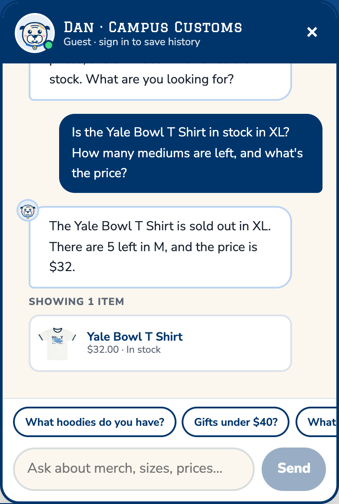
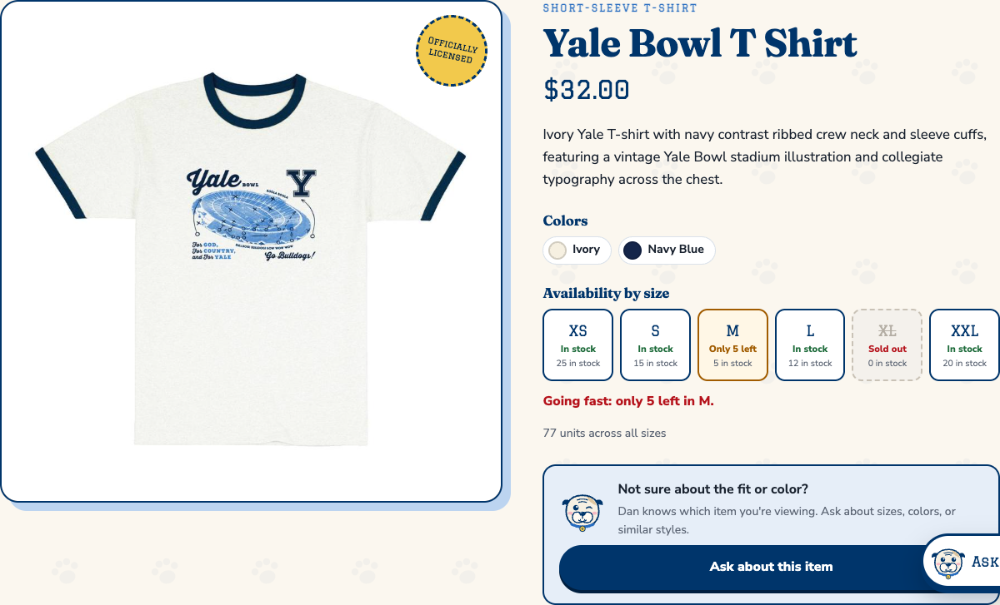
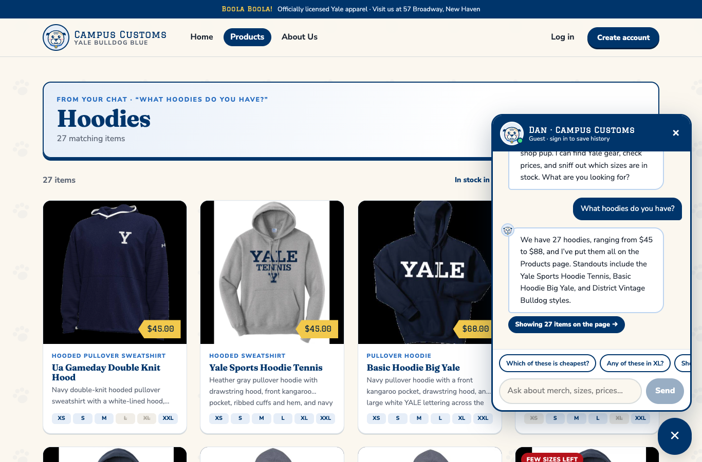
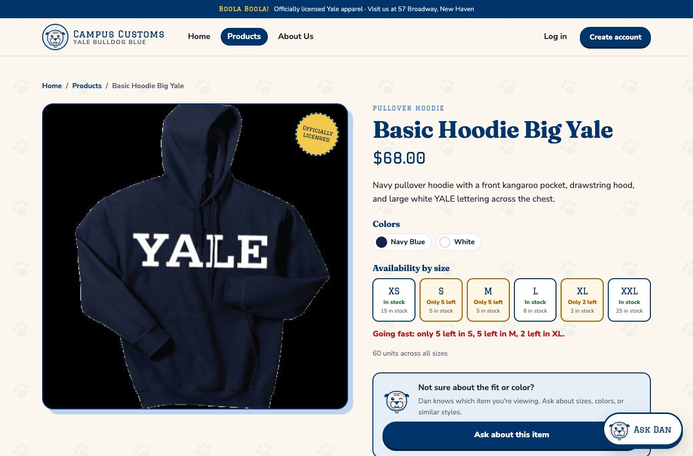
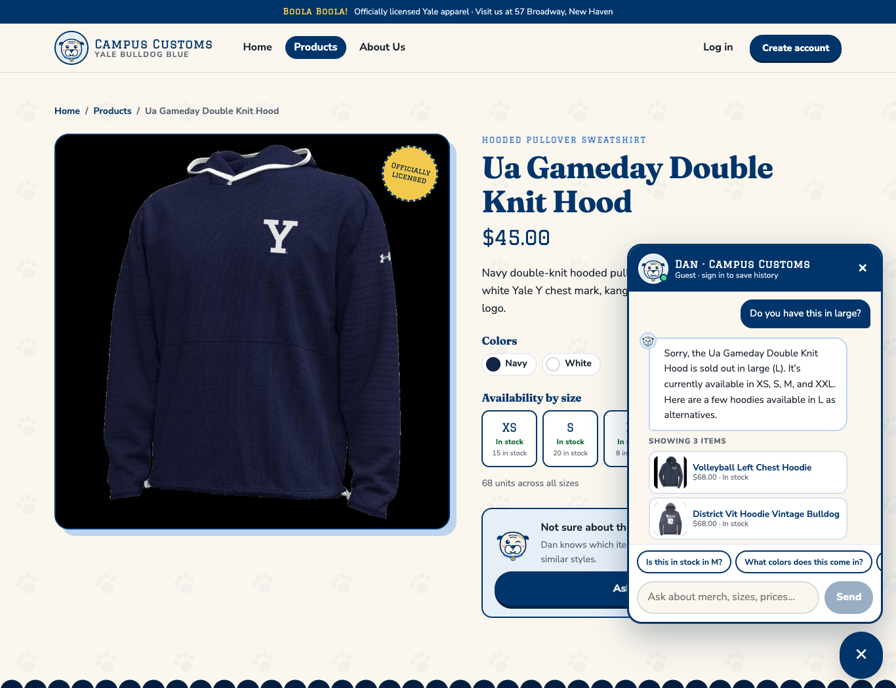

Campus Customs: App Check
| # | Check | Result |
|---|---|---|
| 1 | Chat checks an item's inventory: honest stock and price from the database | ✓ Pass |
| 2 | Category question ("What hoodies do you have?") puts dynamic product cards on the page, and each card opens its item page | ✓ Pass |
| 3 | Usability feature (Problem 9): a sold-out size gets in-stock alternatives, asked from the product page's "Ask about this item" button | ✓ Pass |
1Chat checks inventory: honest stock and price
Shopper: Is the Yale Bowl T Shirt in stock in XL? How many mediums are left, and what's the price?
Dan: The Yale Bowl T Shirt is sold out in XL. There are 5 left in M, and the price is $32.


catalogue + inventory) for yale-bowl-t-shirt:
| Price | XS | S | M | L | XL | XXL |
|---|---|---|---|---|---|---|
| $32.00 | 25 | 15 | 5 | 12 | 0 | 20 |
What this proves: the chatbot answers stock and price from the live database (it called the
check_stock tool), states a sold-out size clearly, and quotes the exact quantity and price. Nothing was guessed.
2Category question puts dynamic product cards on the page
Shopper (on Home): What hoodies do you have?
Dan: We have 27 hoodies, ranging from $45 to $88, and I've put them all on the Products page. Standouts include the Yale Sports Hoodie Tennis, Basic Hoodie Big Yale, and District Vintage Bulldog styles.


/products/basic-hoodie-big-yale, with the large image and full info (description, price, colors, stock by size).What this proves: the agent returns structured matches (a search_id for a real database search),
the front end renders them as product cards on the page, and the Problem 3 single-item view works for those cards.
The count and price range ($45 to $88 across 27 hoodies) come from the full search, not from the model.
3Usability feature: sold-out size gets in-stock alternatives
Problem 9 added the find_similar_products agent tool, the context-aware question chips, and the
"Ask about this item" button. Here the shopper opens the chat from the Ua Gameday Double Knit Hood page and asks
about a size that is sold out.
Shopper (on the product page): Do you have this in large?
Dan: Sorry, the Ua Gameday Double Knit Hood is sold out in large (L). It's currently available in XS, S, M, and XXL. Here are a few hoodies available in L as alternatives. [cards: Volleyball Left Chest Hoodie · District Vit Hoodie Vintage Bulldog · Squash Left Chest Hoodie]

| Product | Size L in stock |
|---|---|
| Ua Gameday Double Knit Hood (asked about) | 0 |
| Volleyball Left Chest Hoodie (suggested) | 8 |
| District Vit Hoodie Vintage Bulldog (suggested) | 15 |
| Squash Left Chest Hoodie (suggested) | 25 |
What this proves: the Problem 9 tool works in the running app. Every alternative it suggested really has size L in stock, because the stock filter runs in the database query, not in the model.